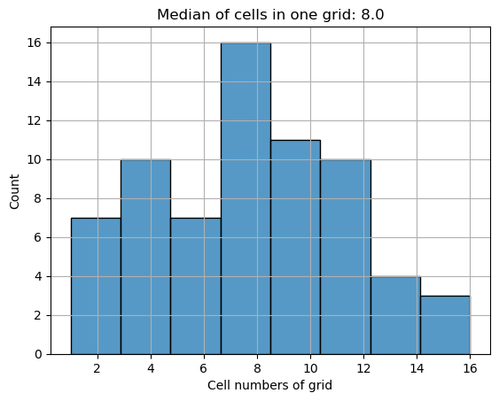
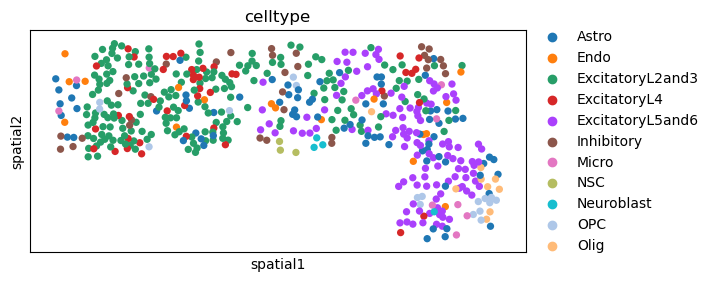

Basic tutorials
import packages and load data
[1]:
import Polyomino as plmo
[2]:
import scanpy as sc
[3]:
scdata = sc.read_h5ad('./data/Figure2/proportion_simulated/Scenario1.h5ad')
[4]:
stdata = sc.read_h5ad('./data/Figure2/proportion_simulated/Eng2019_seqFISH.h5ad')
generate grids
[5]:
stdata_grid = plmo.generate_grid(stdata,width=500)

set up Polyomino object and running
[10]:
plmo_object = plmo.Polyomino(scdata,stdata_grid,cluster_time=1,device='cpu')
[11]:
plmo_object.allocate()
Running 1-th clustering.
Running 1-th mapping.
Total loss: -1.820
Total loss: -1.958
Total loss: -1.958
Total loss: -1.958
Total loss: -1.958
Starting spot mapping.
Total loss: -1.886
Total loss: -1.958
Total loss: -1.959
Total loss: -1.959
Total loss: -1.959
Spot mapping completed.
Mapping matrix saved in zm.spot_matrix
allocating single cell to spatial locations
[13]:
cell_alocated_data = plmo.sc2sc(scdata, stdata, plmo_object.spot_matrix,thres=0.1,method='max')
100%|██████████| 68/68 [00:01<00:00, 54.82it/s]
[14]:
sc.pl.spatial(cell_alocated_data,color='celltype',spot_size=120)

[ ]: